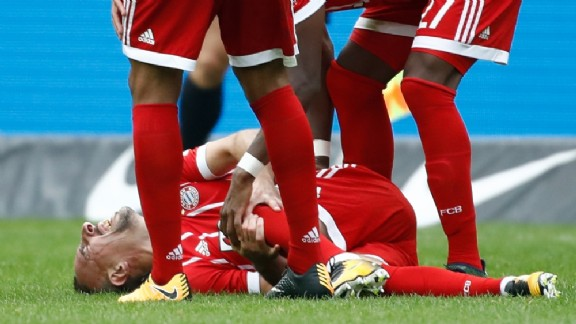

Franck Ribéry geblesseerd, speelt dit jaar niet meer.
Franck Ribéry kan een streep zetten door de rest van het kalenderjaar. De 34-jarige aanvaller heeft in het duel met Hertha BSC (2-2) zijn buitenste knieband afgescheurd en moet twee tot drie maanden revalideren, zo heeft hij laten weten aan Sky. Bayern München is zelf nog niet met een officiële diagnose naar buiten gekomen.
Ribéry moest zich zondag na ruim een uur voetballen laten vervangen door Kingsley Coman en kan zich richten op de tweede seizoenshelft, hoewel hij volgens Sky niet geopereerd hoeft te worden. Sportief directeur Hasan Salihamidzic liet na het duel met Hertha al weten voor het ergste te vrezen: “Franck heeft veel pijn, het ziet er niet goed uit.”
Ribéry, 81-voudig international van Frankrijk, kwam dit seizoen tot negen officiële wedstrijden en daarin was hij goed voor één doelpunt en één assist. Hij maakte zijn laatste treffer in de Bundesliga overigens op 20 mei, in het met 4-1 gewonnen duel met SC Freiburg.
Update 2 oktober 16.19 uur - Bayern bevestigt blessure Ribéry: ‘We wensen hem een snel herstel’
Bayern München heeft maandagmiddag via de officiële kanalen bevestigd dat Franck Ribéry de komende tijd uitgeschakeld is met een knieblessure. Waar de Fransman zelf het over een hersteltermijn had van enkele maanden, houdt der Rekordmeister het voorlopig op ‘de komende weken’. Karl-Heinz Rummenigge wenst Ribéry sterkte: “Het spijt ons dat Franck geblesseerd is geraakt. We wensen hem een snel en goed herstel.”